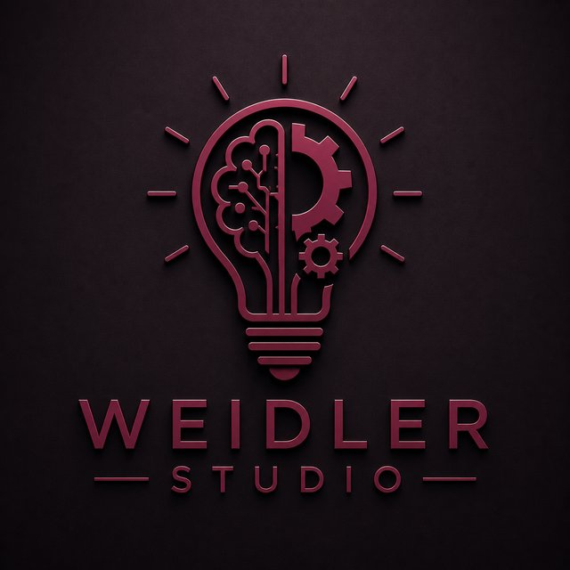

Depuis le cellulaire
Rédigez et envoyez vos prompts via Discord, où que vous soyez — pas besoin d'être devant votre PC.
Nexus Bridge fait le pont entre Discord et Cursor. Envoyez des demandes de prompt depuis votre cellulaire : la commande arrive dans Cursor, qui exécute le travail et vous répond en retour — en cours, complété ou erreur, avec les informations pertinentes. Une connexion bidirectionnelle entre votre téléphone et votre IDE.
Télécharger (Windows)Application desktop Windows. Lancez NexusBridge.exe après téléchargement.

Rédigez et envoyez vos prompts via Discord, où que vous soyez — pas besoin d'être devant votre PC.
La demande est transmise à Cursor sur votre machine, qui prend le relais et traite la commande.
Cursor vous répond sur Discord : traitement en cours, tâche complétée ou erreur — avec le détail utile à chaque étape.